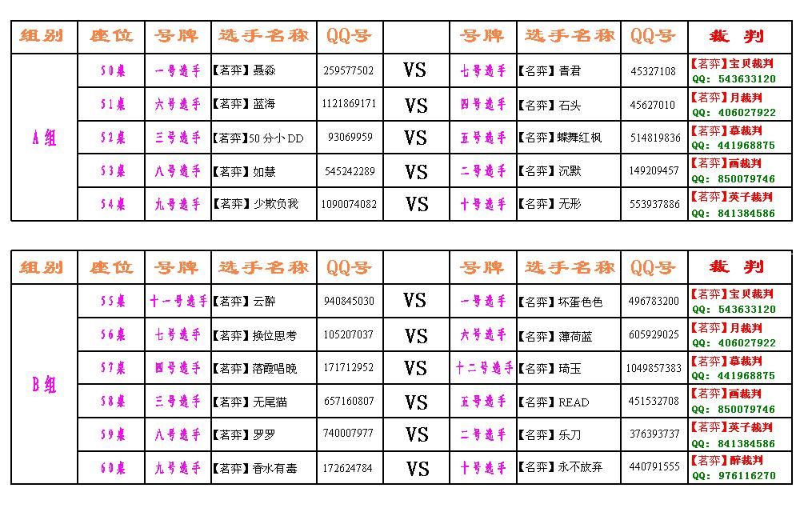

四月茗弈家族内部交流赛比赛细则
#1 四月茗弈家族内部交流赛比赛细则 作者：雅典娜 发表时间：2009-4-7 14:06:25
对战选手名单
2009年4月10号首轮1：1+决赛

为防止影响其它玩家下棋，占座，我们会刷喇叭提前公告，我们的比赛会占用50 — 66桌，比赛共两轮，第一轮淘汰赛，共两盘+，第一盘编号小的选手先执假先手。第二盘编号大的先执假先手，如果结果为1：1或0：0则加赛一盘三分钟快棋，胜者则进入下一轮，如果首轮结果为2：0或0：2则胜者进下一轮，败者淘汰，关于加赛假先手的确定，首轮两盘棋总耗时少者确定，由裁判核实后问总耗时少者确定 。
入下一轮4月10日，A组：19：20点名入座，50-54桌，先到者先坐设好密码，密码为该桌桌号，选手齐后直接点开始，裁判确认假先手后19：30正式宣布开始！第一盘一方胜后，双选手不得直接开始，需等裁判抓图保存后（如50桌第一盘图片名为50-1.bmp或50-1.jpg；第二盘为50-2.bmp或50-2.jpg）第二盘假先手需为编号大的选手，裁判核实后开始。下完后裁判抓完图，确认结果后，如已分胜负，则一方进入下一轮，50桌胜者为C1可前往61桌等侯（密码为61），如未分胜负则加赛一盘三分钟快棋，胜者进，裁判确认结果双选手才可离开。
A组由C1，C2，C3，C4，C5，再加上一个C6是从五个落败者者中激活的一人，选出标准为，优先从 1：1和棋的选手中选出，如仅用1个选手是1：1后落选的，则该人为C6，如有多人是1：1后落选的则比较三盘棋总耗时少者成为C6，如果没有1：1后落选的，则从0：0后落选的选手中选出，如仅用1个选手是0：0后落选的，则该人为C6，如有多人是0：0后落选的则比较三盘棋总耗时少者
成为C6，如果全部是0：2落败的，则比较二盘棋总耗时少者成为C6，第二轮共一盘为积分赛：假先手由主裁判抽签确定（单数C1，C3，C5；双数C2，C4，C6）
/*760*90，创建于2012-2-9*/ var cpro_id = 'u761865';
#2 Re:四月茗弈家族内部交流赛比赛细则 作者：安娜制作所 发表时间：2009-4-7 14:51:26
辛苦积分组长了,谢谢!
#3 Re:四月茗弈家族内部交流赛比赛细则 作者：茗奕的飞猪 发表时间：2009-4-7 18:06:37
辛苦总监和积分组长了，祝比赛取得圆满成功！
#4 Re:四月茗弈家族内部交流赛比赛细则 作者：闲倚栏杆 发表时间：2009-4-8 14:10:50
是总监辛苦，我没做什么、
#5 Re:四月茗弈家族内部交流赛比赛细则 作者：茗弈小刀 发表时间：2009-4-9 11:19:22
呵，该说谢谢的是我。你们为我分担了很多，感激在心里就不言说了。#6 Re:四月茗弈家族内部交流赛比赛细则 作者：茗弈梓轩 发表时间：2009-4-10 10:56:45
这次比赛大家辛苦了，预祝比赛取得圆满成功！#7 Re:四月茗弈家族内部交流赛比赛细则 作者：静待花开 发表时间：2009-4-10 18:04:29
 真羡慕，我也加入你们吧。
真羡慕，我也加入你们吧。
#8 Re:四月茗弈家族内部交流赛比赛细则 作者：坏蛋色色色 发表时间：2009-4-15 11:08:44
 我没下好姐姐不要生气了。偶错了。。。。。。。。。。。。
我没下好姐姐不要生气了。偶错了。。。。。。。。。。。。